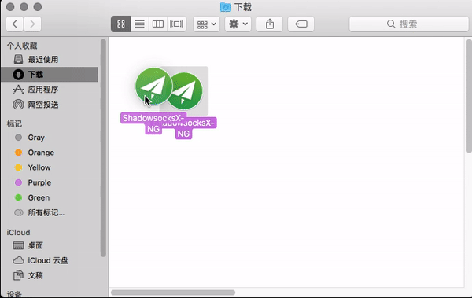
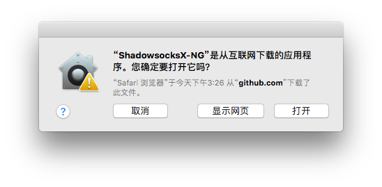

Shadowsocks 设置方法 (macOS)¶
系统要求¶
在安装之前，请始终确保您的系统满足最低系统要求。
您需要具备 MacOS 10.11 或更高版本才能运行 ShadowsocksX-NG。如果您的操作系统版本较旧， 则请先升级到 MacOS 10.11 或更高版本。
安装 ShadowsocksX-NG¶
按照下面的说明在 MacOS 上下载并安装 ShadowsocksX-NG。
1. 下载客户端¶
访问 Shadowsocks 下载页面。
点击最新版本的 ShadowsocksX-NG.x.x.x.zip 进行下载 (x.x.x为版本号) 。
{kind=link}
或是前往 客户端中心 下载
2. 安装客户端¶
双击解压 ShadowsocksX-NG.x.x.x.zip , 获取 ShadowsocksX-NG。
{kind=link}
将 “ShadowsocksX-NG” 拖移到 “访达”里面的 “应用程序”。
{kind=link}
在 “应用程序” 中双击 “ShadowsocksX-NG” > 选择 “打开”。
{kind=link}
配置 Shadowsocks 账号¶
手动添加¶
点击屏幕顶部菜单栏的 .. image:: ../_static/mac-menu_icon_disabled.png
- target
../_static/mac-menu_icon_disabled.png
- alt
menu_icon_disabled
> “服务器” > “服务器设置”。
{kind=link}
点击窗口上的 “+” > 填写 “地址” > 填写 “服务端口” > 选择 ”加密方法”。
填写 “密码“ > 填写”备注” 为可选项。
点击 “打开Shadowsocks” 。
当显示
Shadowsocks: On时，表示系统代理已经打开。
{kind=link}
二维码方式¶
此二维码同样适用于其他客户端。
点击屏幕顶部菜单栏的 .. image:: ../_static/mac-menu_icon_disabled.png
- target
../_static/mac-menu_icon_disabled.png
- alt
menu_icon_disabled
> “扫描屏幕上的二维码” > 当看到 “已添加新的Shadowsocks服务器”，代表添加成功。
点击 “打开Shadowsocks” 。
当显示
Shadowsocks: On时，表示系统代理已经打开。
{kind=link}
配置系统代理模式¶
点击屏幕右上方菜单栏的 .. image:: ../_static/mac-menu_icon_disabled.png
- target
../_static/mac-menu_icon_disabled.png
- alt
menu_icon_disabled
> “PAC自动模式”。
{kind=link}
注意事项¶
PAC 模式 表示可以实现自动代理， 及本来可以访问的网站不会经过代理，推荐日常使用。
全局模式 表示计算机内大多数流量都会经过代理， 不推荐日常使用。